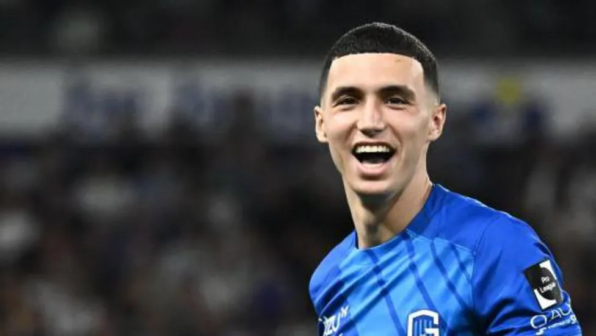

Premier League
Latest updates and news from the English Premier League.
Here are the upcoming fixtures for the English Premier League:
Matchday Fixtures
Saturday, August 31, 2024
Chelsea vs. Manchester United
Aston Villa vs. Brighton
Brentford vs. Newcastle
Fulham vs. Wolverhampton
Sheffield United vs. Nottingham Forest
Sunday, September 1, 2024
Manchester City vs. Arsenal
Liverpool vs. Crystal Palace
Monday, September 2, 2024
Tottenham Hotspur vs. Burnley

Leicester have signed attacking midfielder Bilal El Khannouss from Genk for a fee in the region of £21m.
The 20-year-old has signed a four-year deal with the Premier League side.
He won the Belgian Pro League's Young Player of the Season award in 2023-24 and was also part of the Morocco squad who won bronze at the Olympic Games in Paris earlier this month.
He also featured for his country at the 2022 World Cup in Qatar as they reached the semi-finals.
The Belgium-born player started his career at Anderlecht before moving to Genk, for whom he made 51 appearances in all competitions last season.
"I’m very happy," he said. "Leicester City is a big club in England and it’s always a dream for a young guy like me to play in the Premier League so I’m very excited and I hope to achieve big things here.
"I talked with the manager, and I immediately had a good feeling with the club."
Reports in Belgium suggested El Khannouss had not trained since Monday in order to force a move to King Power Stadium.
"With a bit more experience, he might have handled it a bit differently in the past few days," said Genk coach Thorsten Fink at a news conference in Belgium on Thursday.
Leicester host Aston Villa in the Premier League on Saturday after collecting one point from their opening two games.
Lee Carsley has handed call-ups to Angel Gomes, Tino Livramento, Morgan Gibbs-White and Noni Madueke in his first squad since being named England interim manager.
Lille winger Gomes, Newcastle defender Livramento, Nottingham Forest midfielder Gibbs-White and Chelsea winger Madueke all played for Carsley during his time as England Under-21 manager.
Manchester City playmaker Jack Grealish, who was cut from England's preliminary Euro 2024 squad, has been recalled as well as Manchester United defender Harry Maguire.
England take on the Republic of Ireland in Dublin on 7 September (17:00 BST) and Finland at Wembley on 10 September (19:45) in the Nations League.
Carsley was appointed to the role following Gareth Southgate's resignation after Euro 2024.
Carsley puts trust in youth
Carsley, who played for the Republic of Ireland, spent three years as England's Under-21s boss after his appointment in 2021.
Six members of Carsley's first squad - Gomes, Madueke, Gibbs-White, Cole Palmer, Anthony Gordon and Levi Colwill - won the Under-21 European Championship under him in 2023.
Gomes, 23, left Manchester United for Lille in 2020. At United, he had broken into the first team in 2017, aged 16 years 263 days, the youngest player to make his debut from the club since Duncan Edwards in 1953.
"Angel is very technical, he controls the game with his skill and his technique. He is very determined, has a great attitude and loves football," Carsley said.
"I think he is a player people will be excited to see."
Gomes was taken to hospital on 17 August after suffering a head injury in a Ligue 1 fixture against Reims. He later said he was "all good" after receiving treatment.
Gibbs-White, a regular under Carsley in the Under-21 set-up, has also been handed his first cap following his impressive start to Nottingham Forest's Premier League campaign.
"Morgan is a very attacking player, full of energy, very creative, very exciting," said Carsley.
"He has been really successful with England and I thought that was important."
White, Toney and Walker left out
Arsenal defender Ben White, who earned the last of his four caps in March 2022, was again left out of the squad after making himself unavailable for selection.
"As far as I am aware, he [White] wasn’t available for selection and nothing has changed in my two weeks. That’s where we are at with it," said Carsley.
"He is a player I really like," he later told 5 Live's John Murray.
Brentford striker Ivan Toney, Manchester City defender Kyle Walker and Arsenal goalkeeper Aaron Ramsdale, who all went to Euro 2024, have also been left out of the 26-man squad.
Manchester United defender Luke Shaw and Real Madrid midfielder Jude Bellingham both miss out through injury, while United forward Marcus Rashford, Tottenham midfielder James Maddison and Crystal Palace youngster Adam Wharton failed to make the squad.
Newcastle United full-back Kieran Trippier, who played 54 times under Southgate, announced his retirement from international football on Thursday.
Carsley told 5 live he had conversations with Trippier and Walker and, on the latter, said a lack of minutes for his club this season had played a part in his decision.
"He has had a decorated career with England and I don’t see that ending," he added.
“I am really confident in the players; I am really confident in their ability and I believe in them."
Carsley puts own stamp on squad - Analysis
Alex Howell, BBC Sport
In his first interview after taking the job as interim England head coach, Lee Carsley said he wanted to put his "own stamp" on the squad - and he’s definitely delivered on that.
As well as first call-ups for Tino Livramento, Angel Gomes, Morgan Gibbs-White and Noni Madueke - in a squad including five of those who won the Under-21 European Championship under Carsley in 2023 - he’s made big calls in leaving out Kyle Walker and bringing back in Harry Maguire.
Lille's Gomes could have a big impact on how this England team play given the importance he had in the build-up play for Carsley's Under-21 side.
Carsley said Gomes "controls games with his technique" and the centre of midfield has been a problem area for England – predecessor Gareth Southgate trialled Trent Alexander-Arnold in the position during Euro 2024.
Gomes could help the side dominate possession and control play and clips of him doing the role for the Young Lions went viral on social media last summer.
Elsewhere, there's a recall for Manchester City forward Jack Grealish. Carsley agrees that Grealish could be coming in as one of the players who has a "point to prove".
Carsley would not be drawn on whether he wants the job full-time but will be hoping that this group put in two good performances in the next two games to keep his name in the frame for the role.
Full England squad
Goalkeepers: Dean Henderson (Crystal Palace), Jordan Pickford (Everton), Nick Pope (Newcastle United)
Defenders: Marc Guehi (Crystal Palace), Ezri Konsa (Aston Villa), John Stones (Manchester City), Trent Alexander-Arnold (Liverpool), Levi Colwill (Chelsea), Rico Lewis (Manchester City), Tino Livramento (Newcastle), Harry Maguire (Manchester United)
Midfielders: Conor Gallagher (Atletico Madrid), Kobbie Mainoo (Manchester United), Declan Rice (Arsenal), Cole Palmer (Chelsea), Morgan Gibbs-White (Nottingham Forest), Angel Gomes (Lille), Phil Foden (Manchester City)
Forwards: Jarrod Bowen (West Ham), Eberechi Eze (Crystal Palace), Jack Grealish (Manchester City), Anthony Gordon (Newcastle United), Harry Kane (Bayern Munich), Noni Madueke (Chelsea) Bukayo Saka (Arsenal), Ollie Watkins (Aston Villa).
La Liga
Catch up on the latest happenings in Spain's La Liga.
Vitor Roque, the 19-year-old forward known for his finishing and his ability to find space in the penalty area, has joined Real Betis on loan from FC Barcelona. At the Catalan club, he appeared in 16 games, scoring two goals, however the lack of minutes and the high level of competition in the squad mean he is seeking a new adventure in the city of Seville for the coming season. There, he’ll continue to develop under the watchful eye of Manuel Pellegrini, who is excited about the arrival of the player nicknamed “Tigrinho”, or “Little Tiger”. He could be a key player for Los Verdiblancos, especially after an injury to Cédric Bakambu meant the club needed a player with Roque’s characteristics of speed, dribbling and finishing. This is a loan move which benefits all parties, as the player will gain further experience and minutes in LALIGA EA SPORTS. If he adapts and reaches his potential at Real Betis, he could be one of the breakout stars of the season and that would set him up well for when he returns to FC Barcelona.
For Real Betis, the forward is the latest Brazilian to wear the green and white stripes, as they’ve had several important players from the country over the years, such as:
Denilson de Oliveira: He played for Real Betis between 1998 and 2005, participating in 207 games and scoring 14 goals. Denilson is remembered for his technical skills and his ability to unpick defences.
Marcos Assunção: The midfielder was at Real Betis from 2002 to 2007, playing 159 games and scoring 25 goals. His precision with his freekicks and his leadership on the field were fundamental for the team during that time.
Ricardo Oliveira: He was a forward on Real Betis’ books between 2004 and 2006, and also during the 2009/10 season. He scored 39 goals in 76 games, and was key in the Copa del Rey triumph of 2005.
In the case of Vitor Roque, he plays in the same position as Ricardo Oliveira and is similarly known for being able to put the ball in the back of the net. Although Oliveira arrived at Real Betis with more experience and a longer history of scoring goals, Roque is at a much earlier stage of his career, looking to grow and earn minutes. His youth and his potential mean he is one for the future, but he could also become a man for the present at Real Betis, just like Oliveira once was.
Having arrived in Seville and passed his medical, Roque is expected to make his debut this weekend when Real Betis visit the Estadio Santiago Bernabéu to take on Real Madrid on September 1st for a Matchday 4 showdown.
There is a new star talent in LALIGA EA SPORTS, with Real Madrid’s Brazilian signing Endrick enjoying a memorable debut in the competition. The striker scored after just 10 minutes on the pitch over the weekend, when he came on in Real Madrid’s 3-0 victory over Real Valladolid at the Estadio Santiago Bernabéu, in Matchday 2 of the new season.
The goal was the third for Los Blancos in what had been a very even match for the most part, as Real Valladolid played well before Real Madrid eventually found a breakthrough. With his goal, Endrick has become the youngest foreign player to score a goal for the club, at 18 years and 15 days of age, taking the record from Raphaël Varane, who scored for the club aged 18 years and 152 days.
He has also become the third youngest South American player to score in LALIGA EA SPORTS, surpassed only by Lionel Messi (17 years and 311 days) and Fábio Pinto (18 years and 30 days). This is, therefore, a major achievement in LALIGA and it’s the latest example of a Brazilian having success at Real Madrid at a young age, after the likes of Rodrygo, Éder Militão and Vinícius also adapted well.
Debuting at the Estadio Santiago Bernabéu with a goal
Endrick came on in the 86th minute of Sunday’s game, replacing none other than Kylian Mbappé. It only took him 10 minutes to score his first goal as a Real Madrid player, doing so at the very end of the match when he received a ball from Brahim Díaz on the edge of the area. The Brazilian striker found space to shoot, moving slightly to the right side of the area and blasting an incredible right-footed shot, which was powerful enough to slip past the Real Valladolid goalkeeper, who could do nothing stop the missile from the Brazil international.
In his 10 minutes of action, the young Brazilian showed the skills that had made him such an important player at Palmeiras. He is an intense footballer who never gives up on any ball, while he is quick, intelligent, crafty and, above all, clinical. It’s clear that the fans at the Estadio Santiago Bernabéu are going to fall in love with this player.
The striker, who has been nicknamed “Bobby” by his teammates in the dressing room, was thrilled with the debut and with the goal. Speaking afterwards, he said: “I'm very happy, it's a dream come true. I had already played here at the Bernabéu with the Brazilian national team, and I was able to score a goal then... but it wasn’t with Real Madrid.” His teammates are delighted with the quality the Brazilian has added to the squad, while everyone else at the reigning LALIGA EA SPORTS and Champions League winners know they have a new star on their hands.
r
Bundesliga
Stay informed about the German Bundesliga.
Bayern Munich superstar Harry Kane took to the Bundesliga like a duck to water in 2023/24, finishing as the division's top goalscorer with a record haul for a debutant. bundesliga.com spoke to the 30-year-old about his stunning maiden campaign and what he is expecting this time around...
bundesliga.com: How would you sum up your first season at Bayern?
Harry Kane: "I think it was a really good season. I scored more goals than I have before in any other league campaign and I managed some good assists as well. However, there was a feeling of not winning the Bundesliga or any cups that has left me - and I think the team - hungry this term to be successful and get those trophies back."
bundesliga.com: After the lack of trophies you mentioned, how important is it to have a strong start this time around?
Kane: "I think it was important to win the first game on Sunday. Last year showed that in any season, any team can have an amazing year and you have to be at the top of your game to beat anyone. Winning is not easy, and you have to produce a high level for a long period of time to be the champions. Ultimately, whoever lifts the trophy deserves it. That's our aim and we feel like we're in a good place right now. We feel we will improve as the season goes on but hopefully we can get off to a good start in both the cup and the league."
bundesliga.com: You have a new head coach in Vincent Kompany. What are his goals, as well as your own, for 2024/25?
Kane: "From a personal point of view, I want to continue at a high level and improve. Every year, I try and get better and look at ways I can do that. That's no different this time around. From a team point of view, we want to win titles. This club needs to be winning titles, and I think there's a real hunger and desire with the new coach here to do that. He's brought a great energy to the team.
bundesliga.com: Can you describe the new energy you mentioned?
Kane: "He's brought his own style to the team and into the dressing room. He's really respected from his playing career, which wasn't too long ago, so a lot of the squad remember him and have played against him - like myself. He's also clear in what he wants and how he wants to play, to be aggressive without the ball. Also with the ball, he wants to be aggressive and, from a player's point of view, that's great to hear. Training is at a high intensity at the moment, and I think it's only the beginning. We're going to improve, we're going to get better as the season goes on and we're just looking forward to it."
bundesliga.com: Bayern have also signed a couple of players who you are already familiar with in João Paulinha and Michael Olise – they were opponents of yours in England. What can they add to this already strong team?
Kane: "They are two fantastic players, first and foremost. They suit our system really well. Palhinha is an animal in that defensive midfield role. I've had many battles against him and he tackles, he intercepts, he reads the game really well. He's a great addition, and then Michael's talent speaks for itself. His ability on the ball is fantastic, the way he moves, the way he weaves in and out of players, and his final product is at a high, high level. He's still very young, so he still has time to improve too. All in all, they are great additions, which improves our motivation and competition for places."
bundesliga.com: After scoring 45 goals in 46 games last season and 38 the season before, how do you keep playing at such a high level? Is it down to training or natural ability?
Kane: "Training for sure. To be consistent at this level, you have to be mentally sharp and be able to deal with the ups and the downs. Physically, too, I feel in a really good place. I know my body as well as ever and I know when to push and when to recover. I'm probably in the best shape both physically and mentally of my my whole career and that's exciting. I feel like I've got many more years to come."